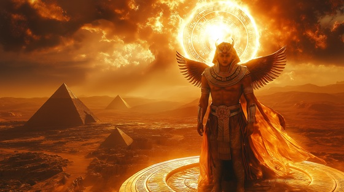

Step into the blazing chariot of Ra, the supreme sun god of ancient Egypt, with this epic power metal anthem that ignites the first chapter of the Pantheon of the Eternal Flame. Born from chaos and crowned with fire, Ra is the creator of all life, the ruler of the skies, and the eternal enemy of darkness.
Who is Ra?
Ra (also Re) is the chief solar deity of Egyptian mythology, often depicted with a falcon head crowned with a blazing sun disk. He sails the solar barque across the sky by day, bringing light and order, and travels through the underworld (Duat) by night, battling the serpent Apophis to ensure the sun rises again. Ra was merged with other gods (like Amun-Ra and Ra-Horakhty) and considered the king of the gods and divine father of the pharaohs.
Ra: Solar Dominion
From the void, I rose in flame
Golden eye and sacred name
Through the silence, I became
The burning heart, the god untamed
Across the sea of stars I ride
In my solar barque through night and light
Enemies of order fear my gaze
I scorch the dark and shape the day
Born of fire, I ascend the sky
No shadow lives when I pass by
I am Ra — the flame, the crown
From dawn to dusk, I strike down
Chaos trembles at my name
In every breath, I burn the same
Solar dominion, the throne of flame
Serpents rise to end the light
Apophis waits in death’s cold bite
But I return with every morn
Reborn in fire, my will reborn
The sky itself bends to my will
My rays bring life, my wrath can kill
The earth obeys, the Nile flows true
The king of gods, eternal through
Born of fire, I ascend the sky
No shadow lives when I pass by
I am Ra — the flame, the crown
From dawn to dusk, I strike down
Chaos trembles at my name
In every breath, I burn the same
Solar dominion, the throne of flame
I ride the hours, day by day
The serpent waits, I never stray
From lotus bloom, the light returns
A world reborn where my fire burns
The stars retreat, the sky is clear
All gods align when I draw near
I am the source, the flame within
The final judge, the light, the king
Born of fire, I ascend the sky
No shadow lives when I pass by
I am Ra — the flame, the crown
From dawn to dusk, I strike down
Chaos trembles at my name
In every breath, I burn the same
Solar dominion, the throne of flame
Through Duat’s night, I face the beast
Where no mortal god finds peace
But even death cannot prevail
The sun will rise — I never fail
From nothing I was crowned in flame
And to the stars, I still proclaim
I am Ra — the undying one
The flame that births the morning sun